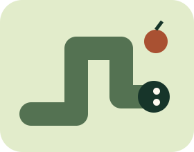

再一顆就好！
貪食蛇
水果巡航
繞個彎，吃顆果，別咬到自己的尾巴。

準備出發
先選速度，再按開始。蛇會自動往右移動。
尚未開始
方向鍵／WASD／方向按鈕；也可在棋盤上滑動。空白鍵或Esc暫停；切換視窗或背景自動暫停，回來後需手動繼續。
經典規則，小心轉彎
- 吃一顆水果加1分、長1格，填滿16×16棋盤就過關。
- 撞牆或碰到身體就結束；可以移入這一步正要離開的尾巴格。
- 不能直接反向，一步只接受一次有效轉彎，避免連按瞬間撞回自己。
- 速度只在開局前選；重新開始會回到準備畫面。不記錄永久最高分、不上傳資料，沒有音效要求。